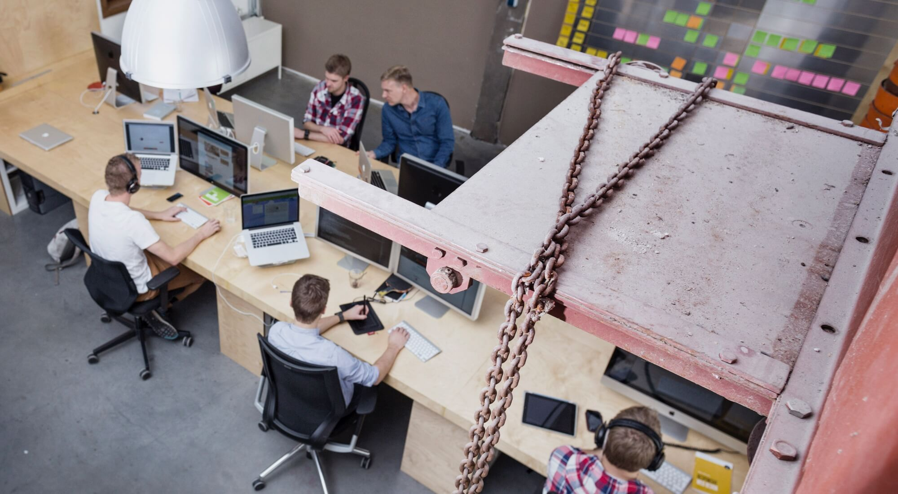
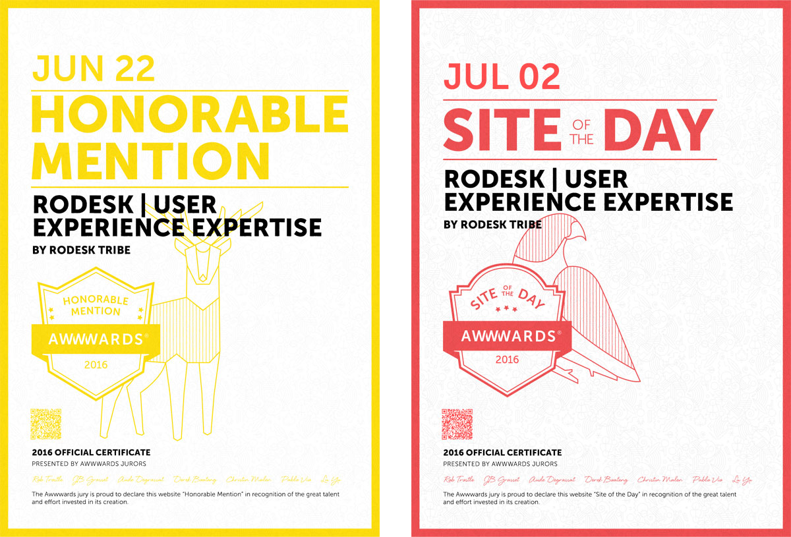

Rodesk is not entirely new to awards or to Awwwards, but we are delighted by this epic win!
I know what this victory entails. In one of our previous posts, I recount my experience of being a part of the Awwwards jury. Still, winning this award was not a simple case of being well connected. We have been hard at work building the initial release of our brand new website, so please allow me to explain what I think earned us this big fat prize.

Thank You Awwwards Team And Jury!
How We Make Our Work Work
Rodesk has come a long way since its launch back in 2012. Hands-on experience in UX design has resulted in a solid online building strategy, which becomes apparent in our approach to this brand new web platform.
Agility is crucial in the fast-paced world of UX design. Our team has become well versed in the agile approach, issuing sequences of small releases involving all disciplines embodied by our tribe. Our first releases focus on solid foundations. We work with a design system based on a flexible grid allowing us to play with a set of modular building blocks that we toy with until we get it right. This has the double benefit of flexibility both in front-end design for users and in custom WordPress content management for our techies.
Contrasts In Layout, Colours, And Typography
The basic style we have embraced is another great boost. We have outlined a crystal clear set of design rules to make our style distinct and identifiable without having to fiddle about. This would only divert attention away from the message we want to get across.
Our design system incorporates a range of clear-cut styles designed for the various modules, making them instantly recognisable for any user. Designed around a flexible grid, these basic modules stand out by their pronounced contrasts in layout, colours, and typography. For typography specifically, we express these contrasts by balancing big fat geometrical headers and titles with friendly and legible content trimmed to human processing capacity whenever large text sections are involved.

The Rodesk Tribe Working On The New Website
Our use of colour is tailored to viewer happiness. Calm grey base layers provide a tranquil yet distinct rhythm across all pages. This sense of quiet emphasises the fresh sparkle of any accents we want to apply for directing the focus of users, in this case personified by the new ‘Tiffany green’ colour we opted for.
In terms of animation, we decided to stress upward motion for any interactive objects featured to mark pathways to other locations. We also opted for a permanently visible base layer that serves as the foundation for any informative layers we wished to add. This is yet another way for us to divide information into surveyable doses as we approach our audience.

Continuous Improvement
So there you have it. Rodesk is back in brand new garments, and we’re coming out swingin’ thanks to our agile and rock solid design approach. Sure enough, we have many wishes on our list for continued improvement, one of which is scaling up the image value of our written content. We are pretty confident we will identify a few other points to tackle, but for now, we are more than happy to relish this newly won award as a much appreciated reward for our work. We want to give a big shout out to the Awwwards team for recognising our efforts: it’s a real encouragement to continue our campaign for Global User Happiness!


- Jonathan Reijneveld
- Journal /
Sketch Plugins That Will Make Your Life Easier
Sketch has become a important part of our workflow, for our designers as well as our coders.
Read more